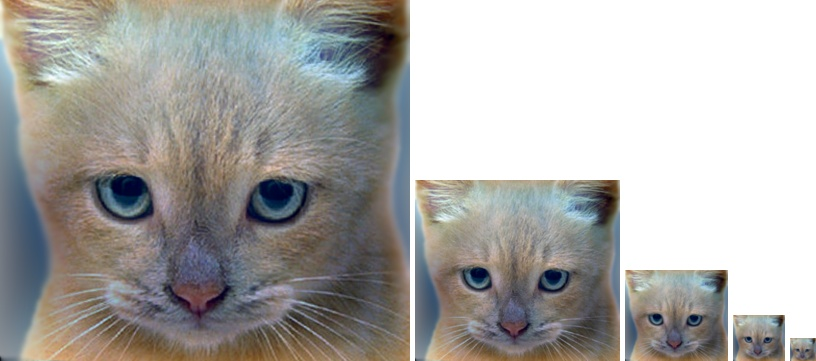
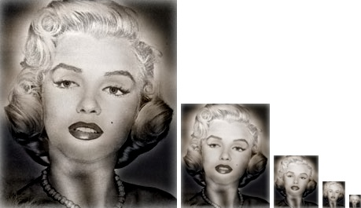

Project 1: Image Filtering and Hybrid Images
Introduction
In this project, the required tasks consisted of reproducing the MATLAB function "imfilter" with all its default settings, and to use the resulting function in order to filter pair of images that are used to create hybrid images.
Function "my_imfilter" Implementation
One of the function's requirements was that both the width and length of the input filter be odd; this is to avoid ending up in an ambiguous situation where the matrix of the filter does not have an entire cell as its center. Thus, the function "my_imfilter" first checks that the dimensions of the input filter satisfies this requirement; otherwise, it displays a string saying "The dimensions of your filter have to be odd". If the first requirement is met, then the function searches for the coordinates of the input filter's center cell which are used to compute how many rows and columns of zeros should be added on the top (bottom) and left (right) of the original image during the zero-padding phase. The number of rows (columns) is obtained by subtraction the first (second) coordinate of the filter's center cell from the row (column) dimension of the filter. Since the function is required to be able to process both color and grayscale images, the function "my_imfilter" checks whether or not the input image has 3 channels. If it does, then the pixel are processed as 3 dimensional vector in order to reduce running time.
Hybrid Image Implementation and Results Discussion
In order to create a hybrid image using two different images, "my_imfilter" is used to filter out high frequencies from one image and low frequencies from the other image before combining the two resulting images into the wanted hybrid image. However, the filter cut-off frequency has to be tunned for each pair of pictures to get a good effect.
Cat and Dog Hybrid Image
The cut-off frequency of 7 given in the starter code happens to give the best result obtained for the combination of the cat and dog images. At the lower cut-off frequency of 4, the resulting hybrid image tend to the image a dog while at the higher cut-off frequency 25, the hybrid image looks more like a cat. Results are show in the figure below

|
|  |
Einstein and Marilyn Hybrid Image
Since the first case gave a pretty good result with the cut-off frequency of 7, this cut-off frequency was the first tried for the pair Einstein and Marilyn, but this time the result was not as good as that of the first pair. Although the hydridization worked, Marilyn's image was more dominant than Einstein's. The lower cut-off frequency of 4 gave a relatively better result while the higher cut-off frequency of 15 gave an image of Marilyn and almost no Einstein except in the smaller scale at the bottom. Results are shown in the figures below
|  |
Bird and Plane Hybrid Image
Once again, starting from the best cut-off frequency used in the previous case, i.e. 4, the result didn't seem very convincing, so a higher cut-off frequency, 11.5, and a lower cut-off frequency, 3, were tried. With the lower cut-off frequency, the hybrid image was dominated by the bird while in the instance of the higher cut-off frequency, the hybrid image was dominated by the plane. Taking a value close to the middle seemed judicious, so 7 was used, but the hybrid image was still dominated by the plane. Thus, the cut-off frequency was reduced to 5.5 which gave a reasonable result.
Bicycle and Motorcycle Hybrid Image
For the bicycle and the motorcycle, a cut-off frequency of 4 resulted into a hybrid image which looks more like a bicycle while on the other hand a cut-off frequency of 12 resulted into an image showing a motorcycle. Choosing a value close to the middle of these 2 cut-off frequencies, 7 gave a satisfying result as shown below
Fish and Submarine Hybrid Image
Creating the hybrid image of the fish and the submarine was a bit tricky as the submarine's color tend to fade and be indistinguishable from the color of water. Starting with the cut-off frequency of 4, the hybrid image looks more like the image of the fish. The cut-off frequency was incremented up to 15 which yield a reasonable hybrid image. The results are shown below